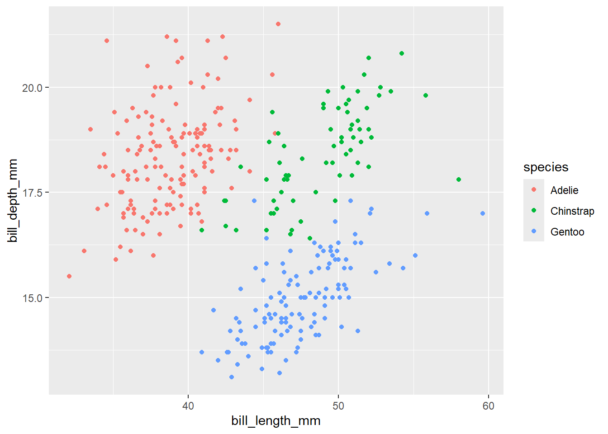
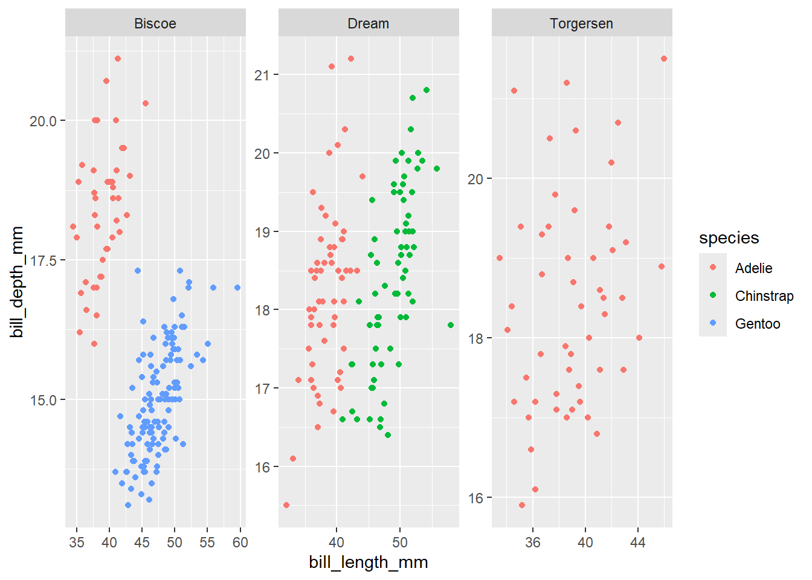
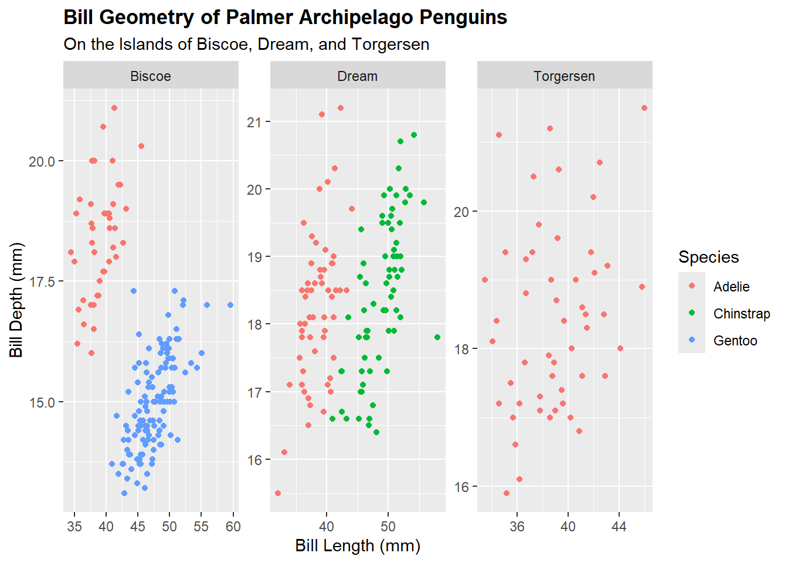
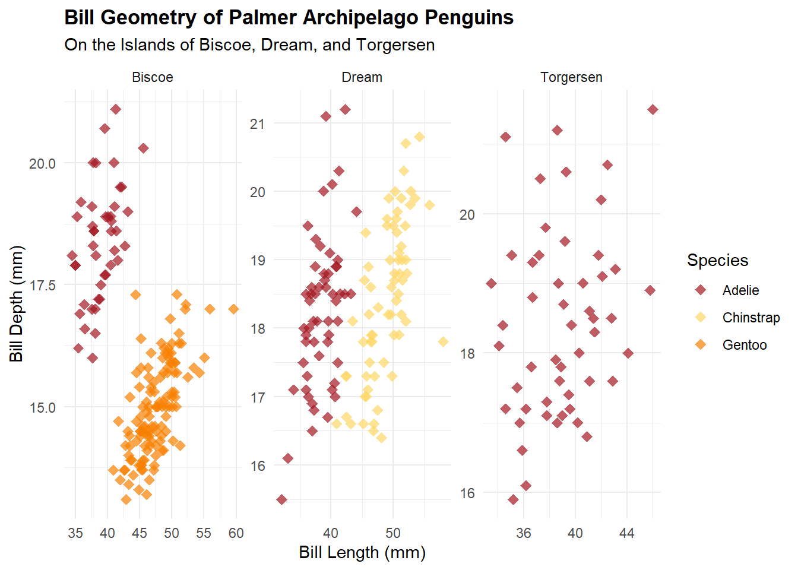

This is a tutorial on how to make a basic, publishable plot in R. A basic understanding of R is useful in interpreting the code, but is not required. For more info on base R scripting, visit “An Introduction to R”.
First thing’s first, let’s load our libraries.
Libraries we will use today are:
tidyverse
here
rsconnect
palmerpenguins
kableExtra
Click “Show code” below to see a description of each library.
Show code
library(tidyverse) # contains ggplot and other essential functionslibrary(here) # allows for cleaner saving library(rsconnect) # allows for easy publishinglibrary(palmerpenguins) # contains the penguin datalibrary(kableExtra) # for making neat tables
Once the packages are loaded, we can use their functions in scripts.
Check out the data
A function is a specific word followed by a parenthesis.
Click “Show code” below to see an example of a simple function we can use to look at the data:
Show code
#print the first few rows of the penguin datahead(penguins)
# A tibble: 6 × 8
species island bill_length_mm bill_depth_mm flipper_length_mm body_mass_g
<fct> <fct> <dbl> <dbl> <int> <int>
1 Adelie Torgersen 39.1 18.7 181 3750
2 Adelie Torgersen 39.5 17.4 186 3800
3 Adelie Torgersen 40.3 18 195 3250
4 Adelie Torgersen NA NA NA NA
5 Adelie Torgersen 36.7 19.3 193 3450
6 Adelie Torgersen 39.3 20.6 190 3650
# ℹ 2 more variables: sex <fct>, year <int>
This isn’t great for viewing purposes, the last two columns are cut off! Let’s form this into a proper table to view the first five lines of data.
Basic table
Just the top five rows to see what’s going on. Click “Show code” to see the detailed breakdown of each line.
Show code
# this |> symbol is called a "pipe". Use this to tell R to do something with #a dataset. The code following it contains the instructions.penguins |># slice() can be used to select a specific number of rows from a dataset. # In this case, we want the first five rows, and we want to pipe that into# the next function:slice(0:5) |># kbl() is a function from kableExtra. This creates a neater table.kbl() |># This command sets the theme of the table:kable_classic() |># and finally, this command identifies the first row "0", and makes the font# bold, the color of the text a dark gray, and the background a nice gold.row_spec(0, bold =TRUE, color ="black", background ="#fed766")
Table 1: Data preview table
species
island
bill_length_mm
bill_depth_mm
flipper_length_mm
body_mass_g
sex
year
Adelie
Torgersen
39.1
18.7
181
3750
male
2007
Adelie
Torgersen
39.5
17.4
186
3800
female
2007
Adelie
Torgersen
40.3
18.0
195
3250
female
2007
Adelie
Torgersen
NA
NA
NA
NA
NA
2007
Adelie
Torgersen
36.7
19.3
193
3450
female
2007
Now that we can see what we’re working with, let’s say we want to look at how bill geometry differs across penguin species and islands. To do this, let’s begin by making a basic plot.
Basic plot scripting
Click on “Show code” below to see a quick script to make a simple plot. This will give us a very basic view of all the bill length and bill depth data by species.
Show code
# First, pipe penguins into the plotting functionpenguins |># The ggplot function makes the base plotggplot(mapping =aes(x = bill_length_mm, # sets the x axisy = bill_depth_mm, # sets the y axiscolor = species)) +# colors the data by speciesgeom_point() # this is what actually puts the points on the plot.

Figure 1: Basic plot of bill length compared with bill depth. Separated into different colors by species.
This is great, but it would be even better if we could see the differences between each island.
Let’s facet wrap that to see the difference between islands
Click “Show code” to see the facet_wrap addition.
Show code
penguins |>ggplot(mapping =aes(x = bill_length_mm,y = bill_depth_mm,color = species)) +geom_point()+facet_wrap(~island, scales ="free") # facet_wrap allows us to view by# island, and the scales = free# makes each graph have its own scale.

Figure 2: Adding a facet wrap to explore the differences between islands.
Nice! However, in Figure 2, the labels are not great. There is no title, and the island names have no context. We can fix them!
Let’s add some better labels
Click “Show code” below to see how labels are added and modified.
Show code
penguins |>ggplot(mapping =aes(x = bill_length_mm,y = bill_depth_mm,color = species)) +geom_point()+facet_wrap(~island, scales ="free")+labs(title ="Bill Geometry of Palmer Archipelago Penguins", # sets the titlesubtitle ="On the Islands of Biscoe, Dream, and Torgersen", # subtitlex ="Bill Length (mm)", # X axis labely ="Bill Depth (mm)", # Y axis labelcolor ="Species")+# labels the legendtheme(plot.title =element_text(face ="bold")) # makes the plot title bold

Figure 3: Adding better labels in the form of a bolded title, subtitle, and axis labels.
Great! We can clearly see in Figure 3 the beak geometry patterns across the islands and species.
Changing the theme
What if you’d like to change the style of the plot to something a little more interesting?
Click “Show code” below to see how you can do this.
Show code
penguins |>ggplot(mapping =aes(x = bill_length_mm,y = bill_depth_mm,color = species)) +geom_point(shape =18, size =3, alpha =0.7)+# Change the pointsfacet_wrap(~island, scales ="free")+labs(title ="Bill Geometry of Palmer Archipelago Penguins",subtitle ="On the Islands of Biscoe, Dream, and Torgersen",x ="Bill Length (mm)",y ="Bill Depth (mm)",color ="Species")+theme_minimal()+# theme_minimal() sets the overall themescale_color_manual(values =c("#a31621","#fed766", # give it a nice color scheme"#f77f00"))+theme(plot.title =element_text(face ="bold"))

Figure 4: Changing the point shape, size, opacity, and color scheme.
With that, we have our final plot! All that is left to do is export it.
Let’s export our plot
Click “Show code” below to see how.
Show code
#ggsave(here("Week_06", # "Output", # this function saves the plot to# "hw_week06_plot.png"), # your files as a .png# width = 8, # height = 5) # in the size 8x5 inches#
The final plot will be located in your working directory/repo in the “Week_06” folder, then in the “Output” folder, named “hw_week06_plot.png”.